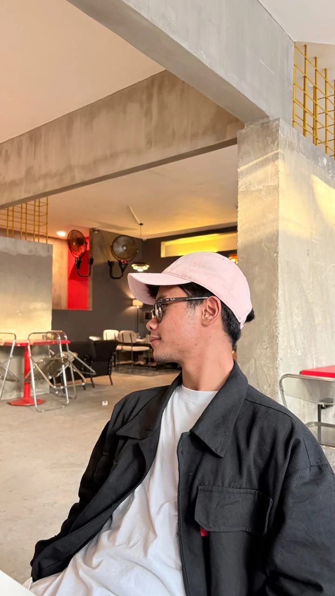
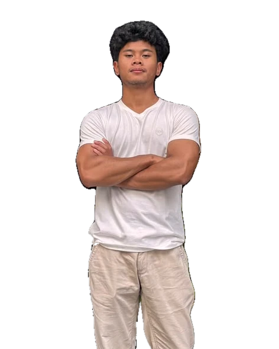

Gambit Rojo
A seven-page website for a branding agency in South Jakarta, taken from the first brief to launch day.
- Role
- Web project coordinator
- Outcome
- Seven pages, live
- Status
- Completed
Junior project manager & IT project coordinator
I turn what clients ask for into plans a team can follow, keeping people, priorities and progress aligned throughout delivery.
Plate IHalo! I'm Gira

Open to work
I'm Gifari Asmara Dwikandy Lieswari, but everyone calls me Gira. I studied Informatics Engineering at Universitas Negeri Malang, and the part of tech I enjoy most is where people, plans and code meet.
I learned project management by doing it. I coordinated client websites as a freelancer for over two years, led a 10-person team to a live web app in four weeks at RevoU Tech Academy, and as a project manager intern at PT Sekawan Media Informatika I ran weekly Scrum sprints and kept 10+ client projects in one Notion tracker.
Now I'm looking for a full-time role in project management, PMO, project control or IT project coordination, anywhere in Indonesia. I'd love to bring the same clear plans and steady updates to your team.
Three places that taught me how projects really run, newest first. Open a role to see the work behind it.
Project Manager InternFeb 2024 – Aug 2024Malang, on-site
| Site | Kind |
|---|---|
| Vallianz Offshore Maritim | Company website |
| Kosme Health | Company website |
| Emerald Visa Konsultan | Company website |
| and 7 more sites | |
Participant and team leadFeb 2023 – Jun 2023MSIB Batch 4 (Kampus Merdeka)
| Course | Project | What it produced |
|---|---|---|
| Data Analytics | Data analytics capstone | A Looker Studio dashboard and four recommendations |
| Software Engineering | Habit Tracker | A live web app, built by the 10 people I led in four weeks |
| Product Management | VIU app requirements | Personas, a journey map and a PRD |
| Digital Marketing | Fore Coffee ads plan | A Facebook Ads campaign plan |
Web Project CoordinatorSep 2021 – Jan 2024Client websites
| Site | Kind | Address |
|---|---|---|
| Gambit Rojo | Agency website | gambit-rojo.netlify.app |
| Sieka | Brand website | siekadetergen.netlify.app |
| SISEDU | Educational product site | sisedu.netlify.app |
| and 4 more sites | ||
For a law firm, a creative studio, a branding agency and university students
Masyarakat Peduli Sesama
Almost six years with an independent humanitarian group in Malang: surveying families who needed help, getting donations and disaster relief where they had to go, and helping at iftar and food drives.
See what I didPlate VIAlmost six years in Malang, 2019 to 2025
I keep projects, people and deadlines on one page.
A few projects I'm proud of. Open any one for the whole story.
A seven-page website for a branding agency in South Jakarta, taken from the first brief to launch day.
Ten people, four weeks, one habit tracker, live on GitHub Pages.
4,338 retail customers, three clustering methods, five segments.
A retail company's sales fell 11.13% in three years. Our team of 11 built a dashboard and found four ways to aim for 15% growth.
A dashboard and 4 recommendations
Who uses the VIU app, how they move through it, and what it should do, written up as a PRD.
Personas, a journey map and a PRD
Audience, competitors and content ideas, turned into a Facebook Ads plan for Fore Coffee.
A Facebook Ads campaign plan
7 projects in project management, data analytics, and product and marketing.
See all projectsThe three I'm proudest of. The rest, including what I'm learning right now, are on their own page.
AwardUniversitas Negeri Malang
Festival Kreativitas Mahasiswa Teknik Elektro (FESMARO) 2023, Faculty of Engineering
CourseRevoU Tech Academy
MSIB Batch 4 (Kampus Merdeka), February to June 2023. One certificate for a track of four courses:
CourseUdemy
Master AI-powered planning, documentation, reporting, risk management, automation, and PM workflows
1 award, 4 courses completed and 3 in progress.
See all certificatesNo skill bars or percentages. Each one comes with where I actually used it.
Where I used it. Weekly Scrum sprints, weekly client reports and one Notion tracker for 10+ client sites at Sekawan.
Where I used it. Led a 10-person team to a live web app in four weeks, and turned freelance clients' requests into developer tasks.
Where I used it. An Informatics Engineering degree, and a Habit Tracker my team built with HTML, CSS and JavaScript and put on GitHub Pages.
Where I used it. Python for my thesis on customer segmentation, and a Looker Studio dashboard for the RevoU capstone.
Clients describe what they want in their own words. I turn that into tasks a developer can build without guessing.
“Can the homepage look more professional?”
The same five steps I've used with clients and teams, from the first chat to launch day.
I find out what the client wants and why, in their own words.
We agree on what gets built, by when and for how much, before work starts.
I break the work into tasks a developer can pick up, each with an owner and a deadline.
While the team builds, I track progress, flag what might slip and send updates every one to two weeks.
We launch, check the result against what we agreed, and note what to do better next time.
Everything I've planned, led or worked on: client websites, team builds, data work and product coursework. Open any project for the whole story.
Freelance · 2023
A seven-page website for a branding agency in South Jakarta, taken from the first brief to launch day.
RevoU Tech Academy · 2023
Ten people, four weeks, one habit tracker, live on GitHub Pages.
Freelance · 2021–2024
The seven client websites I coordinated as a freelancer, and how I ran each one.
Universitas Negeri Malang · Thesis
4,338 retail customers, three clustering methods, five segments.
RevoU Tech Academy · 2023
A retail company's sales fell 11.13% in three years. Our team of 11 built a dashboard and found four ways to aim for 15% growth.
RevoU Tech Academy · 2023
Who uses the VIU app, how they move through it, and what it should do, written up as a PRD.
RevoU Tech Academy · 2023
Audience, competitors and content ideas, turned into a Facebook Ads plan for Fore Coffee.
Everything I've earned or am working on outside university: finished courses, competition awards, and the ones I'm studying right now. Click a certificate to see it up close.
Universitas Negeri Malang · Faculty of Engineering
Juara 3 in the digital technology innovation category (app development) at the Festival Kreativitas Mahasiswa Teknik Elektro (FESMARO) 2023, themed “Bangkit Berprestasi Menuju Indonesia Emas 2045”. Run by the Electrical Engineering and Informatics student association on 11 March 2023.
RevoU Tech Academy · MSIB Batch 4 (Kampus Merdeka)
Final grade 89 out of 100 (A). One certificate for a track of four courses: Data Analytics, Software Engineering, Product Management and Digital Marketing. On the way I led a 10-person team to a live web app in four weeks.
Udemy · School of AI
A five-hour course taught by School of AI.
Udemy · Baba Oyewole
A one-hour course taught by Baba Oyewole.
Celerates · Webinar
Part of the road to CAP Jr. Project Manager: key techniques, essential skills and strategies for junior project managers.
Udemy
Udemy
Udemy
Each one gets its certificate here once I pass it.
A seven-page website for a branding agency in South Jakarta. I coordinated it from the first brief to launch day.
Gira, project coordinator
Seven pages: Home, About us, Services, Insight with an article page, Career, and Start a project.
The agency needed a website that says who they are, shows what they do and who does it, and gives a new client one easy way to start a project.
Who Gambit Rojo is, why to choose them, their clients and how to get in touch.
The agency's story and its five teams: technology, tactical, visual, analytic and content.
Their expertise, from branding strategy onwards, with recent projects.
Articles on design, products, websites and marketing.
The page for reading a single article.
How to join the team and where to send a CV.
A short form: name, email, company and what the project needs.
Collected what the agency needed and turned it into a list of deliverables.
Agreed on pages, features, price and priorities before work started.
Turned each requirement into a task the developer could pick up.
Followed progress and sent the agency an update every one to two weeks.
Saw it through to deployment.
Seven pages, live and ready for new clients.
Home, About us, Services, Insight with its article pages, Career, and a Start a project form.
Visit the siteTen people, four weeks, one habit tracker. This is how I led the team from the first brief to a live web app.
Gira, team lead
| Task | Week 1 | Week 2 | Week 3 | Week 4 |
|---|---|---|---|---|
| Product brief | Week 1 | |||
| User journey | Week 1 | |||
| HTML and CSS | Week 1 | |||
| JavaScript features | Week 2 | |||
| Figma mockups | Week 3 | |||
| Deploy to GitHub Pages | Week 3, milestone: site live | |||
| Refactor CSS and JS | Week 4 | |||
| Final deck | Week 4, milestone: deck submitted |
Ten people with different skills had four weeks to take a habit tracker from the first brief to a live website.
Product brief, user journey, and the first HTML and CSS.
The JavaScript features, tracked against the plan.
Figma mockups, and the site deployed on GitHub Pages.
Site live
Refactored CSS and JavaScript, and submitted the final deck.
Deck submitted
Each week I handed out tasks based on what each person was good at.
Everyone worked from the same task board, so status was never a guess.
A short check-in every day to catch blockers early.
I tracked each week's milestone, so a slip showed up early.
Delivered in four weeks, by a team of ten.
The habit tracker went live on GitHub Pages in week 3. In week 4 we cleaned up the code and handed in the final deck.
A retail company's gross sales fell 11.13% in three years. Our team of 11 looked for ways to grow them 15% in one.
Gira, team member
Sales at a retail case company fell 11.13% from 2009 to 2012. It wanted 15% growth within a year, and needed to know where to look first.
Removed duplicates and fixed formats.
Filtered outliers across 8 metrics.
Built a Looker Studio dashboard.
Turned the findings into four actions.
Set prices around what customers actually buy.
Find cheaper, more efficient ways to ship.
Put effort where sales were already strongest.
Find out why products come back, and cut those losses.
One dashboard, four recommendations.
Everything we found, pointed at the 15% growth goal.
My thesis: grouping 4,338 retail customers by how recently, how often and how much they buy, and testing three ways to do it.
Gira, thesis author
| Method | Silhouette higher is better | Davies–Bouldin lower is better |
|---|---|---|
| Spectral | 0.12 | 0.89 |
| SOM | 0.70 | 0.44 |
| HDBSCAN Chosen | 0.68 | 0.25 |
A shop can't talk to every customer the same way. So which groups do its 4,338 customers fall into, based on how recently, how often and how much they buy?
Recency, frequency and monetary value for each customer.
Min-Max scaling, so all three scores count equally.
Spectral Clustering, SOM and HDBSCAN.
Silhouette and Davies–Bouldin scores.
HDBSCAN.
Silhouette measures how well each customer fits its own group, so higher is better. Davies–Bouldin measures how alike the groups are, so lower means they're better separated.
HDBSCAN had the best Davies–Bouldin score (0.25) and a strong Silhouette score (0.68). SOM's Silhouette was slightly higher (0.70), but its groups were less separated (0.44).
Five segments, ready for targeted marketing.
A model that sorts 4,338 customers into five groups: a starting point for keeping loyal customers and winning back the ones drifting away.
How I turned non-technical requests into websites a developer could build, and kept clients updated until launch.
Gira, project coordinator
Clients knew what they wanted their website to do, but not how to explain it to a developer.
Find out what the client needs and why, in their own words.
Agree on what gets built, by when and for how much.
Turn non-technical requests into tasks a developer can pick up.
Track progress and send an update every one to two weeks.
Deploy the website and hand it over.
Freelancing taught me to set expectations early, turn every request into a clear task, and keep clients in the loop until the end.
Product management coursework: who uses the VIU app, how they move through it, and what the product should do, written down as a PRD.
Gira, team member
Use a real app, VIU, to practise the first steps of product management.
Who the app is for: what they're like, what they need and how they behave.
Each step a user takes, with the pain points and the chances to do better.
What the app should do, written as requirements a team could build from.
Three documents, from user research to requirements.
Together they show the path from understanding users to deciding what to build.
Digital marketing coursework: a Facebook Ads plan for Fore Coffee, built from its goals, audience and competitors.
Gira, team member
Plan a Facebook Ads campaign for Fore Coffee, based on who to reach, what competitors do and what to post.
What the ads should achieve, and who they're for.
Post ideas that fit the brand and the audience.
What similar coffee brands do online.
All of it, turned into one campaign plan.
A campaign plan built on research, not guesses.
Audience insights, content ideas and a look at competitors, pulled together into one Facebook Ads plan.
As a project manager intern, I kept 10+ client websites moving at the same time for a 10–12 person team, with weekly sprints and one Notion tracker.
Gira, project manager intern
Keep 10+ client websites on schedule at once, with design, development, SEO and content, and deployment all working from the same deadlines.
Set the week's tasks for every group.
Schedule, owner, status and handoff, all in one place.
A progress report for each client.
Priorities for the next sprint, agreed with the client.
These sites belong to PT Sekawan Media Informatika and its clients, and Sekawan's design, development, SEO and content, and deployment teams built them. My part, as project manager intern, was getting them delivered: sprints, schedules, task tracking and client updates.
A company that recruits and places Indonesian workers in jobs overseas.
Offshore support vessels, vessel chartering and project management for the marine industry.
A sugar producer, along with sugarcane by-products such as molasses and bagasse.
A beauty retailer selling skincare, makeup, hair care and fragrance online and in its Jakarta store.
Glambox's community website, a separate site from its online store.
A contract manufacturer of herbal products, extracts and essential oils.
A film and animation studio: animation, film production, sound and VFX.
A visa agency handling work and business visas and permits.
A humanitarian organization working for children across Indonesia. I managed the website's maintenance.
A holding company with business units in beauty, transport, manufacturing, fashion and food.
Five months of independent study: four courses in one track, and a 10-person team I led to a live web app in four weeks.
Gira, participant and team lead
An independent study program through Kampus Merdeka: data analytics, software engineering, product management and digital marketing, each with a project to deliver.
Led 10 people from the first brief to a live web app in four weeks.
Cleaned the sales data, built a Looker Studio dashboard and made four recommendations.
Personas, a customer journey map and a product requirements document.
Goals, audience, content ideas and competitors, turned into a Facebook Ads plan.
More than two years as the link between clients and developers, on paid websites for three small companies and university students.
Gira, project coordinator
Be the link between clients who knew what they wanted and developers who needed clear tasks, from the brief to a live website.
A seven-page website for a branding agency in South Jakarta.
A company profile for a law firm, from legal advice to family law.
A brand and product site for a sex education book for children aged 5 to 8.
A one-page site for a skincare lotion made with purslane and aloe vera.
A company and product site for a detergent brand based in Malang.
A landing page for a spray that reduces cigarette smoke.
A portfolio site for a photographer's photo and video work.
Find out what the client needs and why, in their own words.
Agree on what gets built, by when and for how much.
Turn non-technical requests into tasks a developer can pick up.
Track progress and send an update every one to two weeks.
Deploy the website and hand it over.
Almost six years with an independent humanitarian group in Malang, on its transport team.
Gira, transport team
Getting donations, food and help to families in Malang who needed them.
Surveyed the community to find the families who needed help most.
Moved and handed out donated essentials to families in need.
Transported donated supplies and helped with the logistics of disaster relief.
Took part in iftar and food distributions during Ramadan.
Joined activities with children at local orphanages.
Almost six years of this taught me responsibility, teamwork, and how to adapt when plans change on the day.